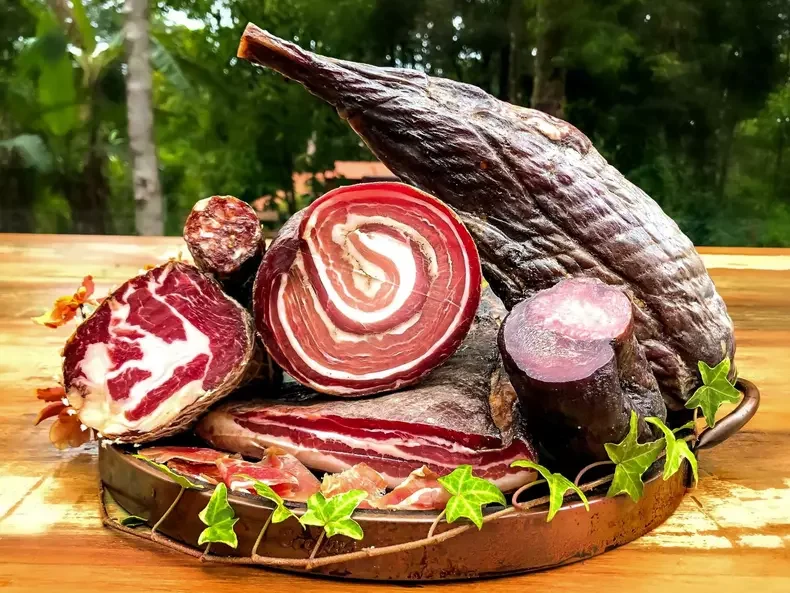
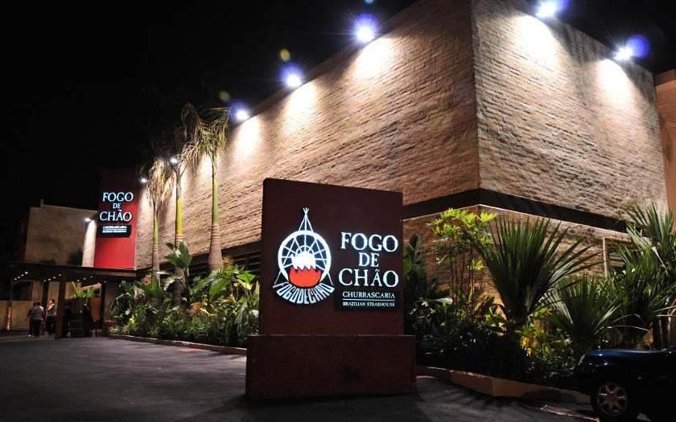
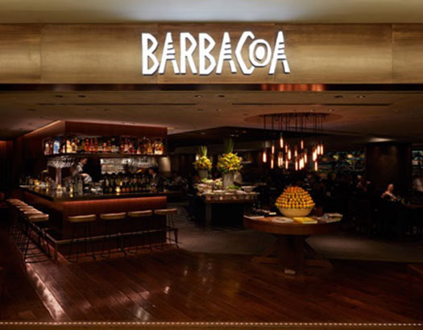
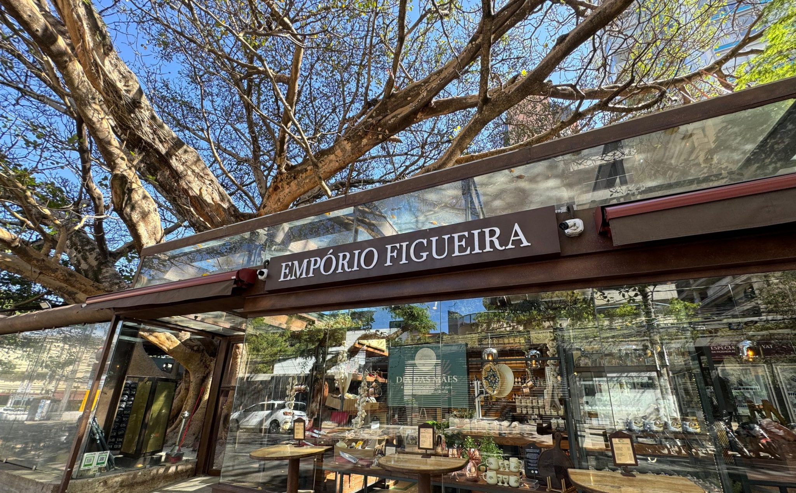
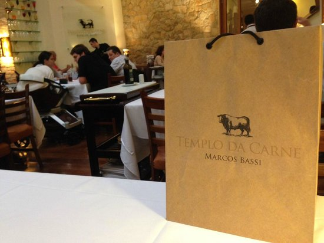
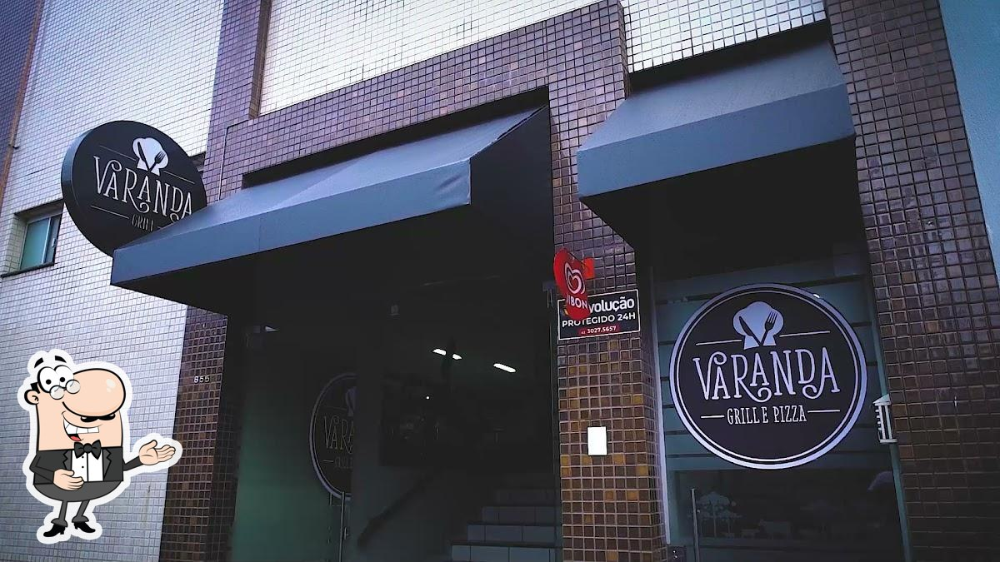

O que é Churrascaria?

Uma churrascaria é um restaurante especializado em carnes grelhadas, servindo pratos como churrasco de
boi, porco, aves e outras carnes. No Brasil, é comum o modelo de rodízio, onde os garçons servem os
cortes de carne diretamente nas mesas. Além das carnes, são oferecidos acompanhamentos variados e
bebidas.
Charcutaria

Charcutaria é a arte de preparar, curar e conservar carnes, resultando em produtos como salames, presuntos,
linguiças e patês. O termo vem do francês "charcuterie" e historicamente se referia ao comércio de carne de
porco, mas hoje engloba diversos tipos de carne, usando técnicas como salga, defumação, fermentação e
desidratação para prolongar a vida útil e aprimorar o sabor.
Técnicas
- Cura: Utiliza sal e outros conservantes para retirar a umidade da carne, prevenindo a proliferação de
bactérias.
- Defumação: Adiciona uma camada de sabor defumado à carne.
- Fermentação: Processo que contribui para o desenvolvimento de sabores complexos e textura.
- Desidratação: Remove o máximo de água da carne, ajudando na sua conservação.
- Cozimento: Processos de cozimento específicos para determinados produtos, como a carne na lata ou
mortadela.
Restaurantes
Os restaurantes especializados em churrasco são espaços dedicados à celebração da boa comida e da
convivência. Neles, o fogo e o sabor são os protagonistas, oferecendo cortes de carne preparados na brasa,
com temperos simples que destacam o gosto natural. Esses locais costumam valorizar a experiência completa,
desde o aroma do carvão até o atendimento acolhedor e o ambiente descontraído, ideal para reunir amigos e
família.
Rodízio
O sistema de rodízio é um dos grandes atrativos das churrascarias brasileiras. Nele, os garçons servem uma
sequência de cortes — picanha, alcatra, fraldinha, linguiça, entre outros — diretamente nas mesas. Além das
carnes, há também um buffet com saladas, queijos, massas e acompanhamentos tradicionais. Essa variedade faz
do restaurante de churrasco uma experiência gastronômica completa, combinando fartura, qualidade e tradição.
Indicações
Fogo de Chão

Churrascaria tradicional com cortes nobres, rodízio completo e ambiente sofisticado.
Conhecida pelo serviço estilo gaúcho e carnes de alta qualidade.
Barbacoa

Uma das churrascarias mais conceituadas do Brasil, com grande variedade de carnes,
buffet premium e atendimento de alto nível.
Figueira Rubaiyat

Restaurante elegante com carnes selecionadas e o famoso ambiente sob uma enorme figueira.
Excelente para ocasiões especiais.
Templo da Carne Marcos Bassi

Ponto clássico para apaixonados por carne, famoso por sua fraldinha e cortes cuidadosamente maturados.
Varanda Grill

Uma mistura de carnes brasileiras e argentinas preparadas com excelência, ambiente refinado
e experiência gastronômica completa.